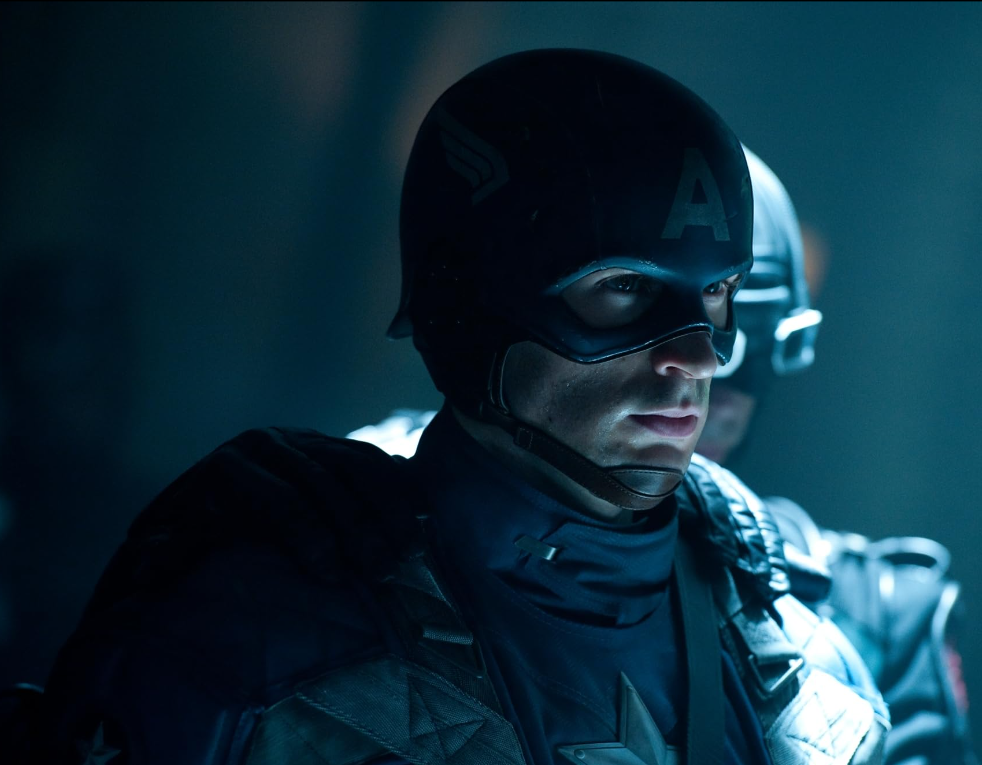

Nick Fury traveled to the Arctic in search of Steve Rogers. When Fury eventually found the Valkyrie he uncovered Captain America's Shield and found Rogers frozen in the ice. He was then met by Carol Danvers whom he had called to help with the situation.
Also known as Captain America managed to remain frozen in the ice for several decades prior to being revived in the modern era. At the end of Captain America: The First Avenger, Steve Rogers (Chris Evans) defeated the Red Skull (Hugo Weaving), but his victory came at a great cost; he was forced to crash the ship off the coast of Greenland. After a few last words to Peggy Carter (Hayley Atwell), Steve was presumably killed and mourned by Peggy, the Howling Commandos, and other people in America who looked up to him.